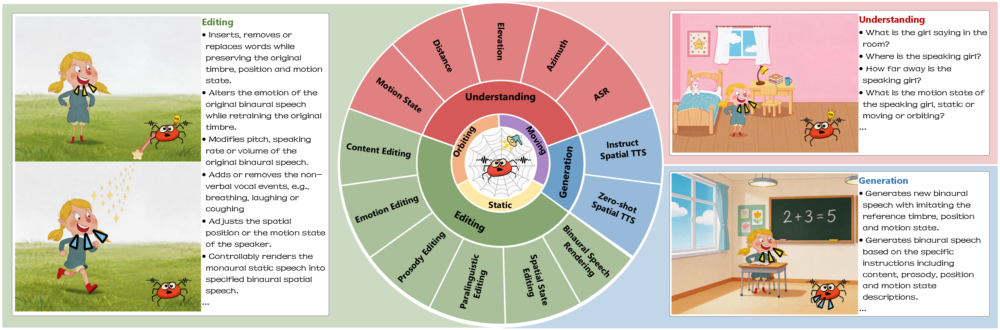
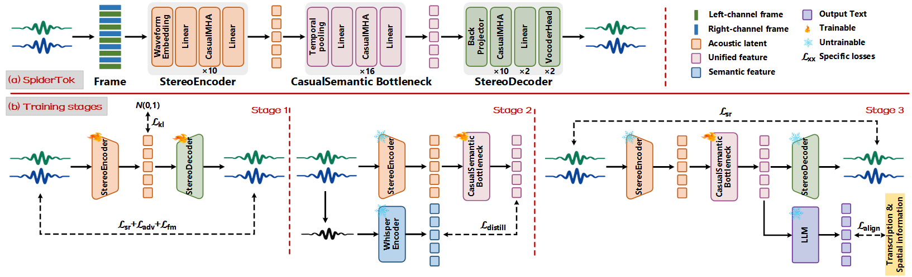
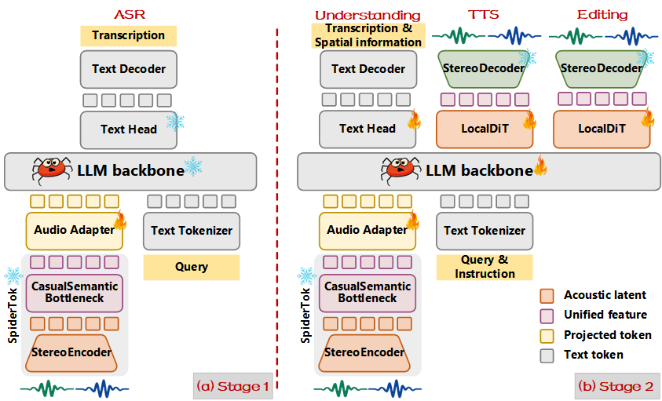

Introduction
Recent advances in unified continuous representations for joint monaural speech understanding, generation, and even editing have shown promising results. Extending these representations to spatial speech tasks requires not only modeling semantic and acoustic information, but also preserving spatial state information. Existing spatial representations, however, are designed for a single capability: some take hand-crafted interaural features as input and do not support waveform synthesis, while others optimize reconstruction fidelity rather than compatibility with a language model. To this end, we propose SpiderTok, a single all-round speech tokenizer that integrates semantic, acoustic, and spatial features in binaural speech for unified spatial understanding, generation, and editing. SpiderTok simultaneously encodes 16 kHz binaural speech into a compact 50 Hz unified continuous representation. Its multi-stage training mainly includes acoustic and spatial reconstruction, semantic distillation, and joint refinement of unified representations. Building on this tokenizer, we further develop SpiderAudio, an all-round large speech language model that supports joint binaural speech understanding, generation, and editing within a single framework. In addition, we propose a “Thinking-Before-Generation” strategy to guide binaural spatial speech editing. Experiments show that SpiderTok reconstructs binaural speech with high fidelity while outperforming binaural baselines on all four spatial metrics, with up to 23% relative gain in angular cosine similarity, and that the unified representation lets SpiderAudio surpass spatial baselines on understanding across static, moving, and orbiting sources, while also supporting instruction-guided spatial editing.
The overview of SpiderTok and SpiderAudio is shown as following.


Tokenizer Reconstruction Demos
Reconstruction performance against SpiderTok and other SOTA tokenizers. Note: The BANC model is retrained using the same binaural speech training data and then perform binaural speech reconstruction, whereas both HoliTok and MingTok only support monaural speech input, so reconstruction is performed on the downmixed monaural speech.
Understanding Demos
Spatial speech understanding. Each clip is probed with five questions — direction, up / down, distance, motion state, and transcription — and the answers are set against the ground truth. A green tick marks a prediction that matches; the full predicted sentence is printed alongside so the reasoning is visible, not just the label.
TTS Demos
Text-to-speech with explicit spatial control, in two settings. In zero-shot the target voice and its trajectory are inferred from a short reference clip plus a target text; in instruct they are specified in text instead, with no reference audio at all. Both must produce the binaural target — same voice, continuing along the same trajectory — while saying words that were never recorded.
Editing Demos
Instruction-guided spatial speech editing, grouped into six edit categories: content, emotion, paralinguistics, prosody, spatial rendering, and spatial state. Each example pairs the original clip with the edited output and prints the instruction the model was given. Within a category the samples are distributed over static, moving, and orbiting sources, so each edit is exercised under more than one spatial condition.